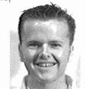

|
|
|
|
Welcome to Our Family History Center!
Here are our Missionaries serving,
| Elder & Sister Pierson |
Elder & Sister Dickerson |
| Sister Squires |
Sister Scheese |
| Sister Bell |
Here is the Student Employees
 Amber Miller |
 Curits Cheney |
 Kristen Herrud |
 John Bauman |
Dena Burk |
 Kyu-Sook |
Here is Josh Taylor
www.rootsweb.com/~idsrfhc/josh.html
Send suggestions or comments to: Blaine R Bake, Ricks College/BYU-Idaho (familyhistory@ricks.edu), Error: Could not get the instance of the Counters Object. There have been " & CStr(nCount1) & " visits since 4/26/2000 ")
End If
set objCntr1=nothing
%>
224D McKay Library, 525 South Center, Rexburg, ID
83460-0405, (208) 356-2376 <%
Dim ObjCntr1
Dim nCount1, nErr1
Dim strName1
strName1= Application("CounterName")
Set ObjCntr1= server.createobject("IISSample.PageCounter.1")
ObjCntr1.PageHit
ncount1=ObjCntr1.Hits
nErr1 = Application("IsErr")
If (Err <> 0 AND nErr1 <>0) then
Response.Write ("
Error Code:" + CStr(nErr1) )
Else
Response.Write ("